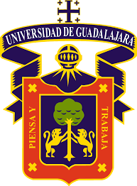

Contact Information
- Address: Guadalajara, Jalisco.
- Age: 21 years
- Phone: (+52)3334724363
- Email: hadiegoa02@gmail.com
- Github: https://github.com/Pollux02
- Nationality: Mexican
Professional Profile
Passionate about technology and the development of innovative solutions. My focus is on constant learning and applying my knowledge to challenging projects. I consider myself responsible, proactive, and capable of adapting and learning quickly. I am excited to contribute to the world of computing and technology with my energy and dedication.
Work Experience
-
Systems Engineer
ORDI Process Automation - Guadalajara, Jalisco | 2023 - Present
Programmer in the Human-Machine Interface (HMI) area.
-

Programmer (Social Service)
CUCEI University of Guadalajara - Guadalajara, Jalisco | 2023 - Present
Software development for a professor at the university.
Education
-
Computer Engineer.
University of Guadalajara CUCEI | 2024A Eighth semester
General Competencies High School.
University of Guadalajara Prepa 6 | Completed
Secondary Education.
Higinio Ruvalcaba Romero | Completed
Skills
-
C, C++, C#, Python, VB, Java Development... 70%
Development of mobile applications in the Android Studio IDE... 50%
SQL databases... 50%
Implementation of optimization algorithms... 50%
Creation of documentation for project development... 70%
Microsoft Office... 70%
English... 70%
Personal references
-
Bruce Wayne
Wayne Industries
Anthony Stark
Stark Industries
_